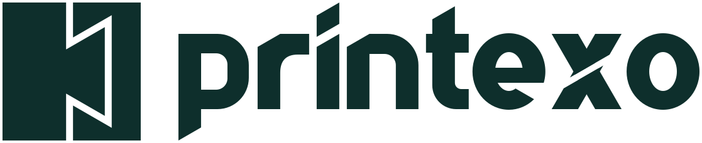
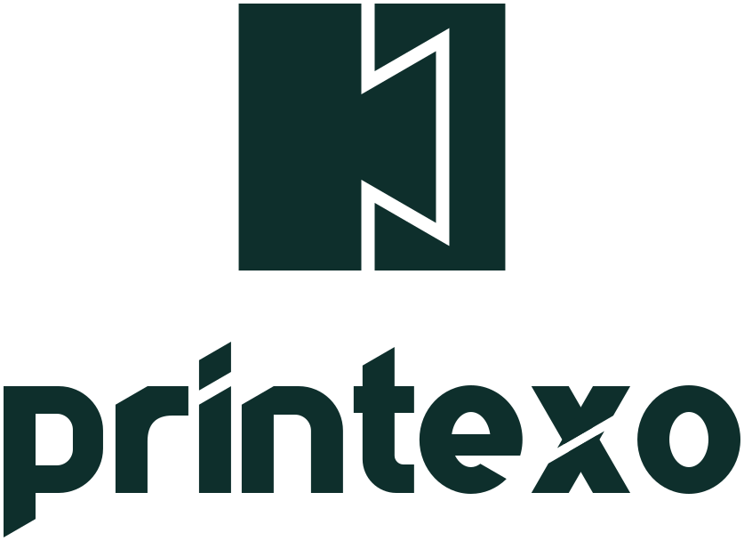
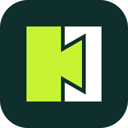
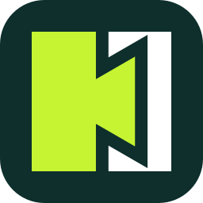
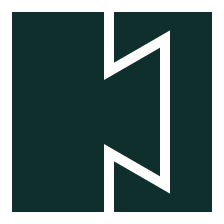
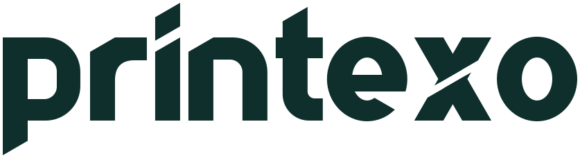

Bold, fast and confident. exo means connecting: printexo is the joint between your shop, the print floor and your customer. The symbol is a dovetail, two halves locked by a tail that flares at the brand's one angle, the 30° blade. The same blade cuts every stem, the i-dot, the p descender and the slice through the x in the wordmark.
The horizontal lockup is the default logo wherever there is room: site header, emails, documents, signage. The symbol spans the wordmark from ascender to descender; the gap between them is half the x-height. Never rebuild the lockup by hand. Always use the supplied files.


A square split into two halves that lock together, like a woodworking dovetail joint that holds without glue. The tail leaves its half 64 units wide, runs 56 units and flares at exactly 30° on each side. The gap between the halves is 10 units on a 200-unit square, the same as the wordmark's blade gap. In the two-tone version the tail half is Lime, so the joint itself becomes the thing you remember.
Construction (200-unit square): joint line at 92 · tail 64 wide at the joint, 56 long · flanks at 30° (dashed) · gap 10.
Small cut: the same drawing with an 18-unit gap, so the joint stays open at 16–24 px.
The masters in 00-masters are generated by build_logo.py. Never redraw them.
Use the stacked lockup in square or tall spaces (stickers, labels, posters, packaging sides). Use the symbol alone where the wordmark would be too small or is already present: app icon, social avatar, hang tags, embroidery. Below 32 px, use the small cut app icon (favicons, tiny UI).




The wordmark on its own (horizontal, or stacked print / exo) stays available in 08-wordmark for places where the symbol already appears nearby, such as merch with a symbol on the front.
Clear space: keep a margin around the logo at least equal to the height of the letter “o” (the x-height). For the symbol alone, use a quarter of its width. Nothing may enter that space. The on-… background files already include it.
Minimum size:
Horizontal lockup: 120 px wide on screen · 28 mm in print
Stacked lockup: 56 px wide · 16 mm
Symbol / app icon: 32 px · 8 mm
Small cut app icon: 16 px · 5 mm
Deep Green and Paper carry most of the brand. Lime is the electric accent: highlights, buttons, stickers and the dovetail's tail. Never put Lime on Paper or white (contrast 1.2:1). The two-tone duo logo is for Deep Green backgrounds only.
Contrast (WCAG): Deep Green on Paper 13.3:1 · Deep Green on Lime 11.2:1 · Moss on Paper 5.8:1 · Stone on Paper 3.9:1 (large text only).
Ratio of use: ~60% Paper/white · 30% Deep Green · 10% Lime.
CMYK values are digital conversions. Lime is a very bright colour, so always run a printed proof (or match a Pantone swatch with your printer) before production.
The logo is custom lettering, not a font. For everything else use Archivo (free, Google Fonts, SIL Open Font License, included in 05-typography). One family, used at contrasting weights.


SVG is the master format: infinitely scalable, use it for print and web. PNG has a transparent background, for apps that don't accept SVG (Canva, social media, Office). JPG files always include a background, for email and documents.